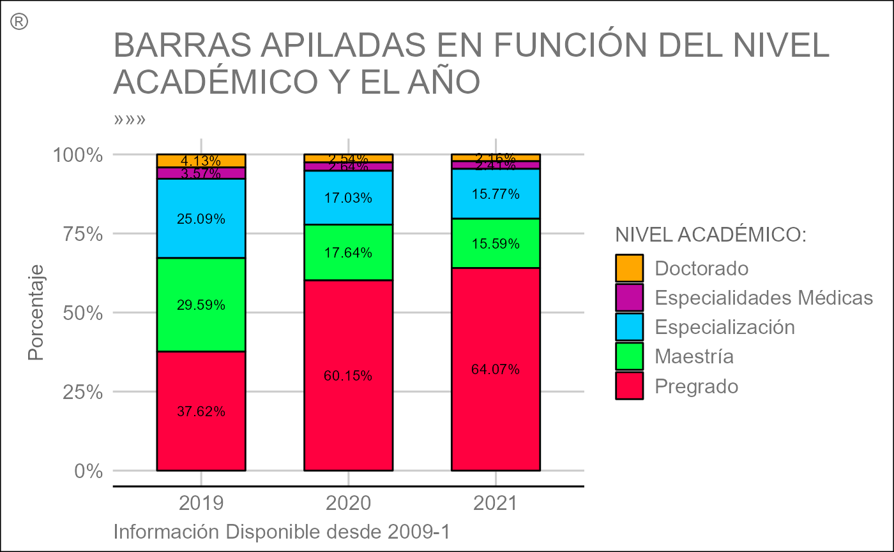

Plot.Apiladas.RdEsta función proporciona excelentes herramientas y opciones para la visualización
de un gráfico de barras apiladas con el objetivo de mostrar el tamaño relativo
(como porcentaje) de una variable categórica, subdivididas por colores en
función de un subgrupo. Dicha gráfica se va a representar usando la librería
Highcharter, la cual usa internamente JavaScript.
Plot.Apiladas(
datos,
categoria,
ano,
periodo,
colores,
titulo = "",
addPeriodo = TRUE,
libreria = c("highcharter", "plotly"),
estilo = NULL,
estatico = FALSE
)Un data frame, no un vector numérico.
Una variable categórica dentro del data frame ingresado en datos.
Valor numérico que indica el año de interés para realizar el gráfico. Si solo se introduce el año, pero no el período, se calculará independiente del semestre (tomando ambos).
Valor numérico que indica el período o semestre de interés para
realizar el gráfico. Si solo se introduce el período, pero no el año, se
calculará con base en todos los años disponibles en datos.
Cadena de caracteres indicando los colores con los cuales se
deben colorear cada una de las series correspondiente a cada nivel del
argumento categoria. Si no se introduce algún vector se usará la paleta
rainbow por defecto.
Cadena de caracteres indicando el título principal del plot.
Si es TRUE (valor predeterminado ssi se introduce los
argumentos ano y periodo simultáneamente) concatenará al título introducido
una cadena de caracteres indicando entre paréntesis el "año-periodo" insertado.
Cadena de caracteres que indica el paquete con el cual se realizará
el plot. Los valores permitidos son "highcharter" (valor predeterminado)
y "plotly". Los valores se emparejarán parcialmente.
Lista compuesta por varios parámetros, los cuales van a ser usados para graficar las barras apiladas y cuyo objetivo es personalizar pequeños detalles de éste.
hc.Tema, hc.Credits, gg.Tema, gg.Legend y gg.Texto: Igual uso
que en Plot.Series()
LegendTitle: Cadena de caracteres indicando un título para la leyenda
(diferentes niveles del argumento categoria).
ply.LegendPosition: Igual uso que en Plot.Series()
ply.Credits: Igual uso que en Plot.Series()
gg.Bar: Igual uso que en Plot.Barras()
Si es FALSE (valor predeterminado) el gráfico a retornar
será dinámico (dependiendo de la librería seleccionada), en caso contrario
se retornará un gráfico estático construido con ggplot2.
Retorna el diagrama de barras apiladas (objeto widget de HTML) creado. La clase del objeto retornado será un "htmlwidget" y adicionalmente pertenecerá a la clase "highchart".
Sabemos que puede ser abrumador el número de argumentos dentro del parámetro
estilo, pero es necesario si queremos ofrecer al usuario la máxima
personalización dentro de cada función usando cualquier librería. Por tal
razón, a continuación, se detalla el listado completo de argumentos, usados
al especificar la librería y en qué función están presentes
(marcado con una × si lo posee).
| Librería | estilo$ | Plot.Series() | Plot.Barras() | Plot.Apiladas() | Plot.Boxplot() | Plot.Radar() | Plot.Treemap() | Plot.Torta() | Plot.Drilldown() |
| ┌ | gg.Tema | × | × | × | × | ||||
| │ | gg.Texto | × | × | × | × | ||||
| │ | gg.Legend | × | × | × | |||||
| │ | gg.Linea | × | |||||||
| │ | gg.Punto | × | |||||||
| │ | gg.Bar | × | × | ||||||
| │ | gg.VarWidth | × | |||||||
| │ | gg.OutShape | × | |||||||
| │ | gg.JitWidth | × | |||||||
| │ | gg.JitSize | × | |||||||
| │ | gg.Range | × | |||||||
| ggplot2 | gg.plty | × | |||||||
| │ | gg.plwd | × | |||||||
| │ | gg.cglwd | × | |||||||
| │ | gg.cglcol | × | |||||||
| │ | gg.fontsize.title | × | |||||||
| │ | gg.fontsize.labels | × | |||||||
| │ | gg.fontcolor.labels | × | |||||||
| │ | gg.border.lwds | × | |||||||
| │ | gg.border.col | × | |||||||
| │ | gg.lowerbound.cex.labels | × | |||||||
| │ | gg.force.print.labels | × | |||||||
| └ | gg.overlap.labels | × | |||||||
| ╔ | hc.Tema | × | × | × | × | × | × | × | |
| ║ | hc.Credits | × | × | × | × | × | × | × | |
| highcharter | hc.BoxInfo | × | |||||||
| ║ | hc.Slider | × | |||||||
| ╚ | hc.borderRadius | × | |||||||
| ┌ | ply.Credits | × | × | × | × | × | × | × | |
| │ | ply.Legend | × | × | ||||||
| │ | ply.LegendPosition | × | × | × | × | ||||
| plotly | ply.Interaction | × | × | ||||||
| │ | ply.Relleno | × | |||||||
| │ | ply.Opacidad | × | × | ||||||
| └ | ply.LegendTitle | × | |||||||
| dygraphs | dyg.LegendWidth | × | |||||||
| ╚ | dyg.Resaltar | × | |||||||
| ┌ | e.Tema | × | |||||||
| │ | e.Credits | × | |||||||
| echarts4r | e.Forma | × | |||||||
| │ | e.LegType | × | |||||||
| └ | e.LegLoc | × |
Txt <- "BARRAS APILADAS EN FUNCI\u00d3N DEL NIVEL ACAD\u00c9MICO Y EL A\u00d1O"
Msj <- "Se considera \u00fanicamente los valores obtenidos en el primer periodo acad\u00e9mico de cada a\u00f1o."
Plot.Apiladas(
datos = ejConsolidadoGrad,
categoria = "NIVEL", # Pruebe también con alguna de -> unique(ejConsolidadoGrad$Variable)
ano = c(2018:2020),
periodo = 1,
colores = c("#FFA700", "#C10AA1", "#01CDFE", "#00FF44", "#FF0040"),
titulo = Txt,
estilo = list(LegendTitle = "NIVEL ACAD\u00c9MICO:", hc.Tema = 4, hc.Credits = Msj)
)
#> Warning: ¡Se usará la librería 'highcharter' por defecto para realizar el plot!
Plot.Apiladas(
datos = ejConsolidadoGrad,
categoria = "AREAC_SNIES",
ano = c(2018:2020),
periodo = 1,
colores = c("#D2D4DC", "#FF8ABF", "#945BC2", "#D11879","#FF7F7F", "#FFA568", "#9CFF86", "#89D8FF"),
titulo = "BARRAS APILADAS EN FUNCI\u00d3N DEL \u00c1REA DEL SNIES",
libreria = "plotly",
estilo = list(
LegendTitle = "NIVEL ACAD\u00c9MICO:",
ply.Credits = list(x = 0.5, y = 1.5, text = gsub("l p", "l\np", Msj)),
ply.LegendPosition = list(x = 0.04, y = -0.3, orientation = "h")
)
)
# Ejemplo usando el caso estático (ggplot2)
Plot.Apiladas(
datos = ejConsolidadoGrad,
categoria = "NIVEL",
ano = c(2019:2021),
periodo = 1,
colores = c("#FFA700", "#C10AA1", "#01CDFE", "#00FF44", "#FF0040"),
titulo = gsub("L AC", "L\nAC", Txt),
estatico = TRUE,
estilo = list(
LegendTitle = "NIVEL ACAD\u00c9MICO:", gg.Tema = 8,
gg.Legend = list(legend.position = "right", legend.direction = "vertical"),
gg.Bar = list(width = 0.6, color = "#000000"),
gg.Texto = list(
subtitle = "\u00bb\u00bb\u00bb", tag = "\u00ae",
caption = "Informaci\u00f3n Disponible desde 2009-1"
)
)
)
